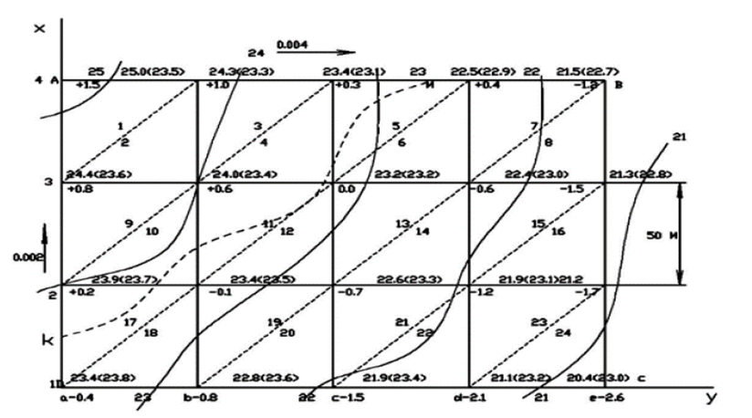

2-амалий иш Мавзу: Вертикал текислашда ер ишлари хажмини ҳисоблаш
Ер ишлари ҳажмини ҳисоблаш учун асос бўлиб, томонлари 10 м дан 100 м гача бўлган квадрат
тўрларини барпо этиш мумкин бўлган қурилиш майдонининг топографик плани хизмат қилади.
Томонлар узунлиги жой рельефи ва тупроқ ҳажмини ҳисоблаш аниқлигига бўлган талабга боғлиқ.
Ушбу планга асосан ер ишлари картограммаси тузилади ва унга барча квадратлар учларининг ер
(ҳақиқий) ва лойиҳавий отметкалари ёзилади.
Бу отметкалар ер ишлари картограммасига ҳам ёзилади. Ишчи отметканинг мусбат ишораси
тупроқ ҳажмини олиб ташланишини (ўйилма), манфий бўлса тўлдирилишини (кўтарма) кўрсатади.
Ноль ишлар нуқтасининг ўрни интерполяция йўли билан аниқланади. Ушбу нуқталарни тўғри
синиқ чизиқлар билан туташтириб, ноль ишлар чизиғи ҳосил қилинади.
Квадратнинг А- В томони бўйлаб А нуқтадан х масофа қуйидаги
формула ёрдамида ҳисобланади ( 1-расм):
Ер ишлари ҳажмини ҳисоблаш майдонни элементар геометрик шаклларга бўлиш йўли билан амалга
оширилади.
24.1-расм. Ноль ишлар нуқтасини аниқлаш.
Шаклдаги ер ишларининг ҳажми қуйидаги формула ёрдамида ҳисобланади:
Бунда: шакл учидаги ишчи отметкалар йиғиндиси, п – шакл учларини сони.
Ер ишларининг ҳажми учбурчак призмалари формуласидан фойдаланиб ҳисоблаш учун шакл
учбурчакларга бўлиниб, шаклдаги ер ишларининг хажми қуйидагича ҳисобланади:
бунда: S- учбурчак юзаси: Дh-учбурчак учларидаги ишчи отметкалар йиғиндиси.
Ер ишлари картограммасини расмийлаштиришда квадратлар тўри ва ноль ишли нуқталаргача
бўлган
масофалар қора, квадратларни учбурчак шаклларига бўлувчи чизиқлар қора пунктир, ишчи
отметкалар ҳаворанг, ноль ишлари чизиғи қизил, кўтарма тўқ сариқ, ўйилма эса оч кўк рангда
кўрсатилади.
Отметкалар бўйича горизонталлар ўтказиш. Квадрат учларининг отметкалари аниқлангандан
кейин, қурилиш майдонининг плани тузилади.
ABCD майдон томонлари 50 м дан бўлган квадратларга бўлинган. Квадрат учларининг
ҳисобланган
отметкалари сантиметргача яхлит олиниб, бурчак учлари номери ёнига ёзилади. Шу отметкалар
бўйича талаб қилинган кесим баландлигига (h=0.25м ёки h=0.5м) горизонталлар ўтказилади.
Мисолда кесим баландлиги ht=1м деб олинган.

24.2-расм. Қурилиш майдонининг плани.
Квадратларнинг барча томонлари бўйича интерполяция қилинганидан кейин горизонталлар
ўтказилади. Шунда жой рельефи горизонталлар билан
тасвирланади.